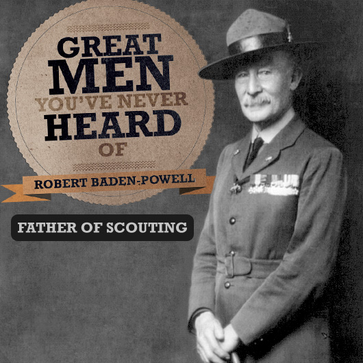

⚜️ Fondatorul • 2014
Baden-Powell, fondatorul cercetășiei

Robert Stephenson Smyth Baden-Powell, primul Baron Baden-Powell (n. 22 februarie 1857 – d. 8 ianuarie 1941), denumit și B-P sau Lord Baden-Powell, a fost general-locotenent al armatei britanice, scriitor și fondator al Mișcării Cercetașilor.
Ziua lui de naștere, 22 februarie, se sărbătorește în toată lumea ca Ziua Mondială a Mișcării Scout.